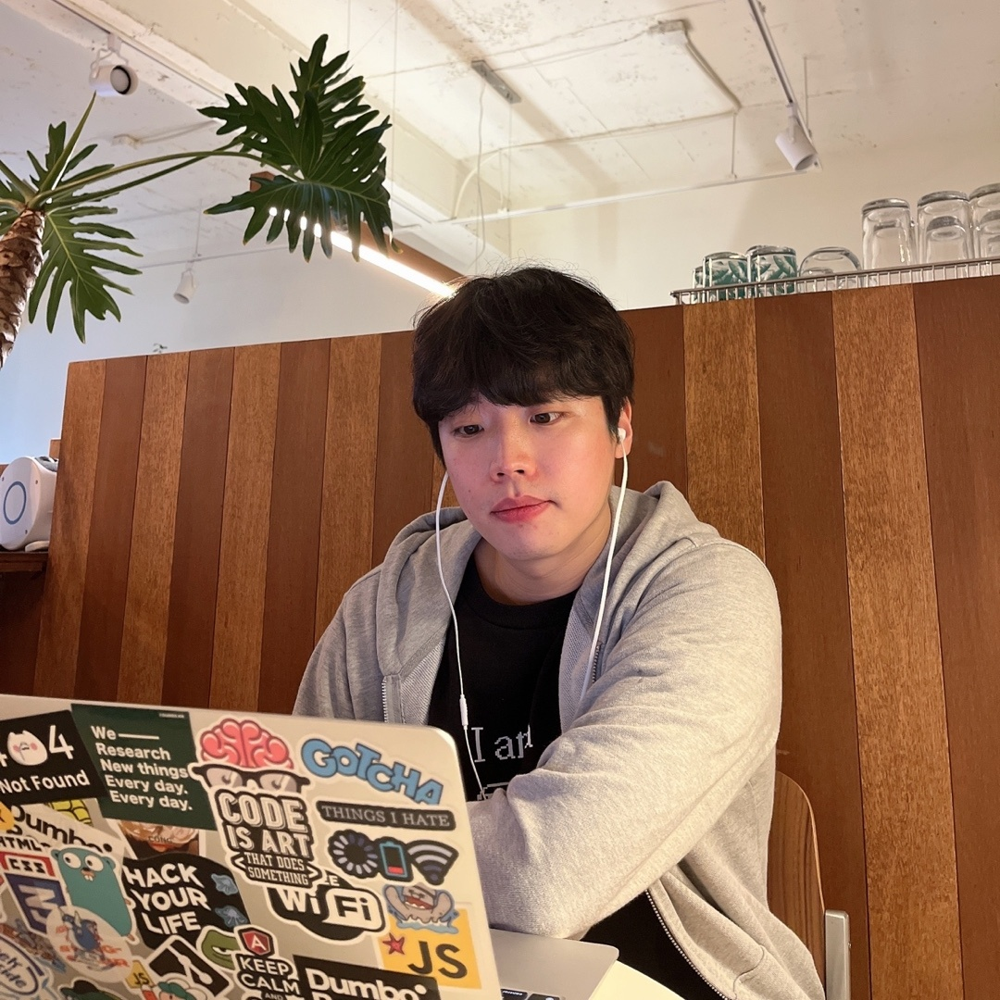
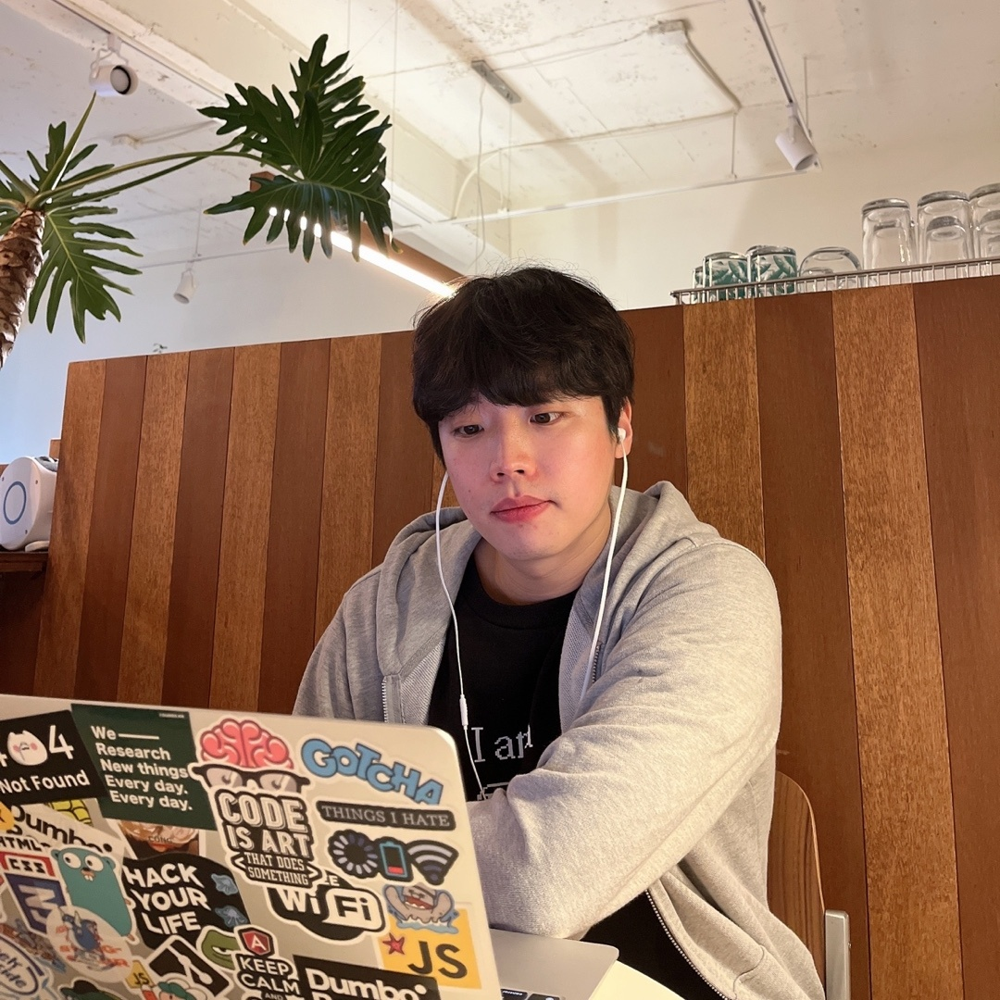

김 민 영
프론트엔드 엔지니어
소개말
안녕하세요,
함께 일하고 싶은 개발자가 되기 위해 고민하는 프론트엔드 개발자 김민영입니다.
지식을 공유하는 문화를 좋아하고, 배경지식을 지속적으로 쌓아나가는 사람입니다.
어려움과 역경을 통해 성장의 이야기를 만들어나가는 것에 큰 의미가 있다고 생각합니다.
이익을 위한 성과 중심적인 마인드를 가지며, 좋은 결과를 만들기 위해 과정을 중요시합니다.
린 스타트업의 경험을 통해 개발자로서 스타트업 문화를 깊이 있게 이해하며, 효율을 높이기 위해 노력합니다.


프로젝트
Rolling Page
Border UI를 구현
Atomic Design 패턴 구현
재 렌더링 시간 단축을 위해 useCallback, useMemo 사용
정적타입의 장점을 살리기 위해 Hooks 및 컴포넌트 타입을 적절히 지정
git-flow 전략을 이해하고 브랜치를 관리함으로써 협업 문제 최소화
Caffeine Market
API서버 명세를 명확히 파악 후 이용해 서버 관련 마찰 최소화
비동기 데이터 요청 및 전송
Figma를 이용해 디자인을 구현하고 아키텍쳐를 배분하여 업무 효율 극대화
git flow 전략을 사용해 브랜치를 관리함으로써 협업 문제 최소화
Jira, Slack을 도입해 Sprint 형태의 Agile 작업 환경 구현
(주니어의 Jira 활용을 위한 팁 - 블로그 기고, 구글검색 최상단 노출)
Analog Clock
실시간으로 시간이 반영되도록 SPA 라이브러리인 React 사용
배포 목적이 아니었기에 상대적으로 가볍고 유연한 Recoil 사용
Recoil Hooks 사용으로 폴더 루트 및 재사용 최적화
react-tooltip 활용으로 hover 시 시간 명시
JS Components Page
페이지 내 다크모드, Drag & Drop, To do list 등 수록
활동
"알잘딱깔센 JavaScript 비동기 프로그래밍 - 비동기 너 내 동기가 돼라" 도서 출판
fetch를 이용한 API 실습에 관한 내용 담당 집필
JavaScript에서 비동기 프로그래밍 동작에 대한 이해도 증가
2022 Jeju Web Conference 연사 참여
TypeScript를 처음 배우는 사람들을 위한 길잡이 및 향후 방향성에 관한 내용
YOUTUBE에 영상 업로드
"알아서 잘 딱 깔끔하고 센스있게 정리하는 TypeScript 핵심개념" 도서 출판
Generic Part 담당
관련 경험
멋쟁이 사자처럼 프론트엔드 스쿨 2기 수료
제주코딩베이스캠프 와 프론트엔드 개발자가 갖추어야 할 역량 학습
HTML, CSS, JavaScript, React, Firebase, NodeJS, Ajax 등 학습
각 분야의 전문가분들의 특강을 통해 기본의 중요성과 깊은 학습 고찰
Tailwind CSS 이력서(현재 이력서) 경진대회 대상 수상
반응형 웹 디자인(웹 퍼블리셔)양성 과정 수료
사용자경험과 니즈를 분석하여 정보설계, UI설계, 화면설계
프로토타입을 제작하고 사용성테스트를 진행, 디자인 구성요소를 설계하고 제작
서비스 경험디자인을 위해 관찰조사 및 시나리오 개발
HTML, CSS, JQuery에 대한 학습 및 세 가지를 이용한 페이지 제작
Yesnow (강남구 역삼동, 서울특별시)
빅데이터와 인공지능을 이용한 사이즈 측정 앱 "핏파인더" 서비스 상용화
핏테크3.0 기반의 SaaS B2B 영업마케팅팀에서 근무
소비자의 니즈를 분석하고 시장의 방향성에 대해 탐구.
서비스 파이프라인을 제작 후 쇼핑몰과 직접 계약.
고객(유저)와의 커뮤니케이션을 통해 니즈를 파악하고 니즈의 중요성을 이해
50억 규모의 멀티몰과 직접 계약한 경험
린스타트업에 대해 이해하고 BML 프로세스에 대한 깊은 탐구
FineTechWin.Inc (Dallas, TX, USA)
자재 관리 업무 책임자(Supervisor)로 근무(자재 관리, 생산 지원, 유통, 조달, 불량교환, 적재 등)
Samsung Electronics America 생산팀과 물류업체(Geodis)와 협업 근무
Samsung 본사 직원과 출장 경험을 통한 억대 규모 이슈 해결
영어 이메일 커뮤니케이션 능력 및 직원들과 영어 커뮤니케이션 능력
업무에 필요한 엑셀 활용, 물류 시스템 (SAP 등) 사용 능력 보유
학습한 기술
vanilla JS 팀프로젝트 경험과 React 프로젝트를 통한 SSR과 CSR의 이해
React 프로젝트를 통해 SPA 서비스 개발 및 배포 경험
반응형 웹 UI 개발 경험
TypeScript 사용을 통해 오류 최소화 경험
상태관리 라이브러리 Recoil 사용 경험으로 component 관리 최적화 경험
"HTTP 완벽가이드" 도서를 통해 네트워크 이론 학습
"모던 자바스크립트 Deep Dive", "코어 자바스크립트" 등의 도서를 통한 지속적 학습
웹 퍼블리싱 교육 경험을 통해 사용자 친화적 UI 제작에 친숙
tailwind CSS, SCSS(Sass), Styled-component, BootStrap 등의 여러 라이브러리 활용 가능
Photoshop, Illustrator 학습으로 실무 사용 및 디자인에 대한 이해도 높음
git flow 브랜치 전략에 대해 이해하고 있으며, 브랜치 협업 가능
Jira, Slack, Notion 등의 협업툴에 대한 이해도가 높으며, 실무 사용 가능
팀프로젝트 경험들을 통해 팀 내의 컨벤션을 적극 수용해 작업 가능
린스타트업 업무 경험과 애자일 방법론의 이해로 스타트업 문화에 대해 익숙함
자기소개서
새로운 것에 대해 학습하는 것을 즐기는 개발자입니다.
처음 웹퍼블리셔 과정을 배울 때 퍼블리싱 이상의 기술을 배우고 싶은 열망이 커 프론트엔드 개발자를 준비하게 되었습니다. 더 어렵고 과정이 길어질 수 있다는 걱정을 하기보단 한계를 넘어서 도전하는 정신으로 개발자의 길에 들어섰습니다. 훨씬 다양한 사고를 요하며 원하는 것을 무엇이든 만들어 UI로 표현할 수 있는 프론트엔드 개발자의 매력에 푹 빠지게 되었습니다.
다양한 업무 경험이 있는 멀리, 깊게 볼 수 있는 시야를 가진 개발자입니다.
1년간 미국에서 휴대폰 생산을 위한 자재 관리를 리드했으며, 고품질 생산율을 올리기 위한 많은 노력을 했습니다. 이 경험을 통해 모든 직무는 사슬처럼 연결되어 있음을 깨달았으며, 내 업무가 다른 업무에 많은 영향을 준다는 것을 이해하고 있으며, 전체의 성장을 위한 프로세스를 구성하기 위해 노력했습니다. 그렇게 일별 5%의 자재 손실률을 1% 미만으로 줄여 회사 내 대표로 본사 협업 출장을 다녀오기도 했습니다.
B2B SaaS 스타트업 근무 경험으로 업무에 대한 이해와 스타트업 문화에 대한 이해가 높습니다. 자율성에 대한 책임감을 중요시하며, 성과중심적인 업무 플랜을 만들어나갈 수 있습니다. 영업 마케팅팀의 직무 경험으로 직무 이해도가 높습니다.
협업의 중요성을 우선시하는 개발자입니다.
협업 문제는 생산성에 직결된다고 생각합니다. 새로운 사람들과 팀 프로젝트를 경험했을 때 각자의 스타일을 존중하고 맞춰나가기 위해 컨벤션을 지정하였으며, Jira, Slack 과 같은 협업 툴 사용을 제안해 팀 프로젝트를 성공적으로 진행했습니다.
점진적인 인생의 성장을 위해 항상 고민하는 개발자입니다.
멋쟁이 사자처럼 프론트엔드 스쿨을 통해 5개월을 통해 빠른 학습과 적용만을 목적으로 두지 않고 개발자로서의 삶을 어떻게 영위하고 나아가야 할지에 대해 고민하고 학습했습니다. 꾸준함이 삶을 변화시킨다는 것을 이 과정을 통해 실습하게 되었고, 삶의 모토가 되었습니다.